みなとみらいの夜景を見に行く(2018年12月16日)
この記事は、conchan_akitaの1人 Advent Calendar 2018の16日目の記事です。
こんにちは。
コンちゃんこと佐々木です。
雑誌を見ていたら、夜景＆イルミネーション特集がやってまして、最近カメラ使ってないし行きたい！となり。
冬は寒いけど光がいい感じになって良いですよね！
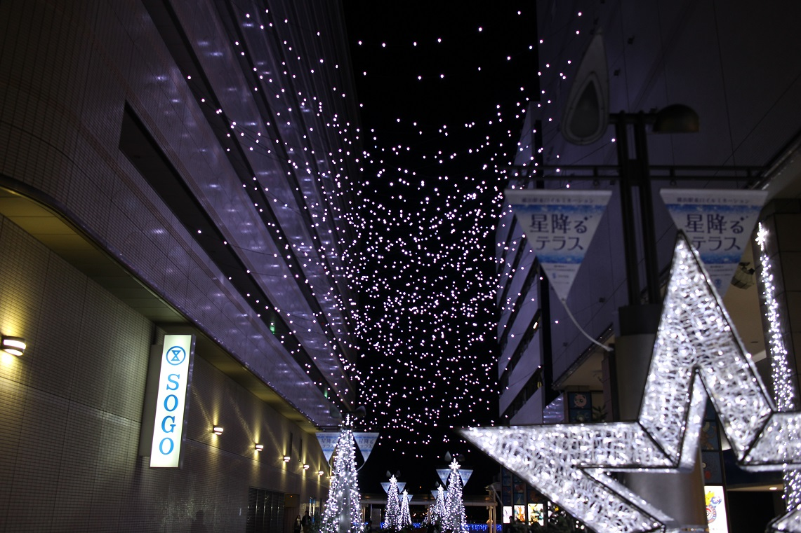
思い立ったらすぐ行動。
ここは横浜駅東口から数分歩いたところ。
ヨコハマミライト、ここがスタート。
ここ初めて来たんですが、右の建物にポケモンセンターが入っているようですよ。
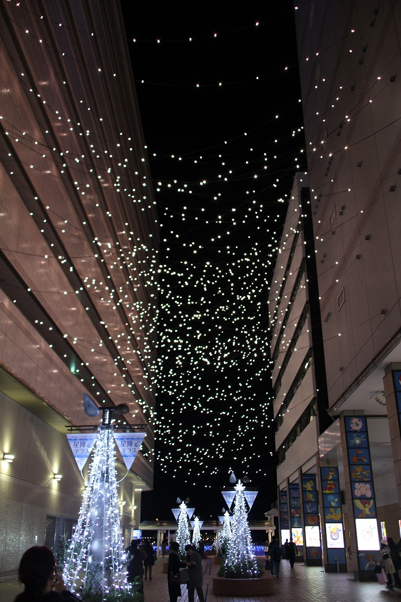
あっ、色変わった。
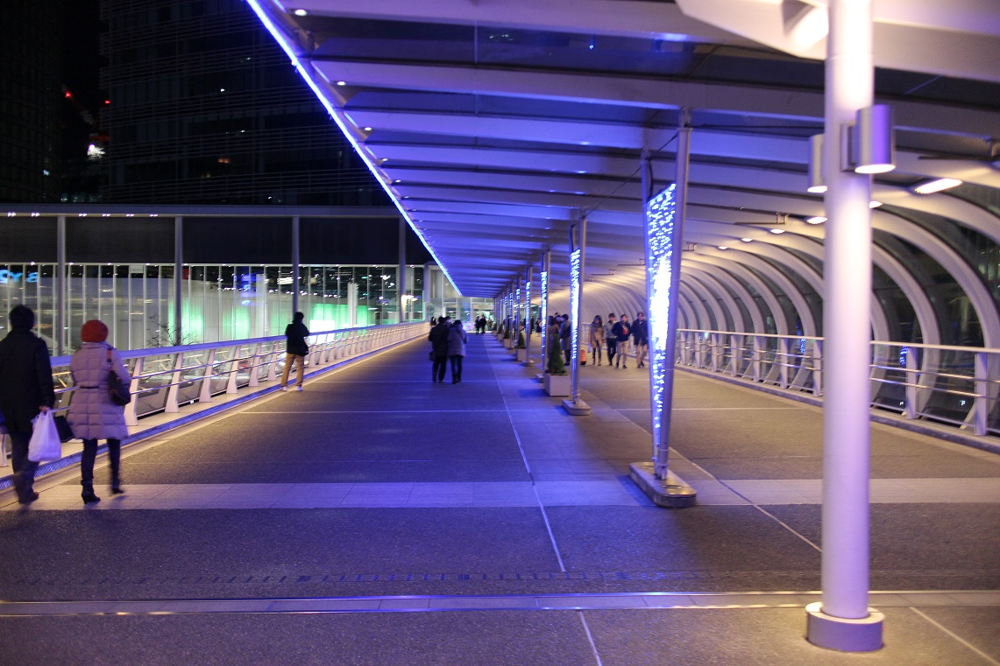
この時点で都会すごいってなってる。
目の前に日産の建物があって、建物内を通過します。
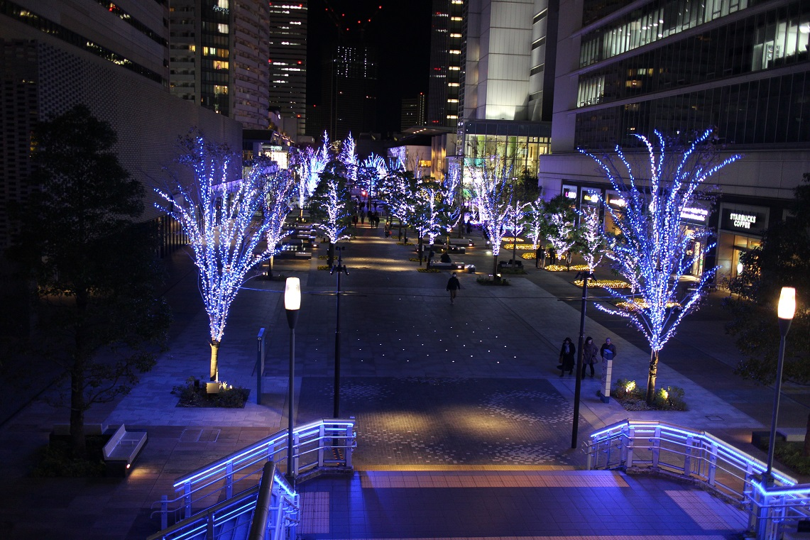
これ結構きれいに撮れたんじゃないですか！？
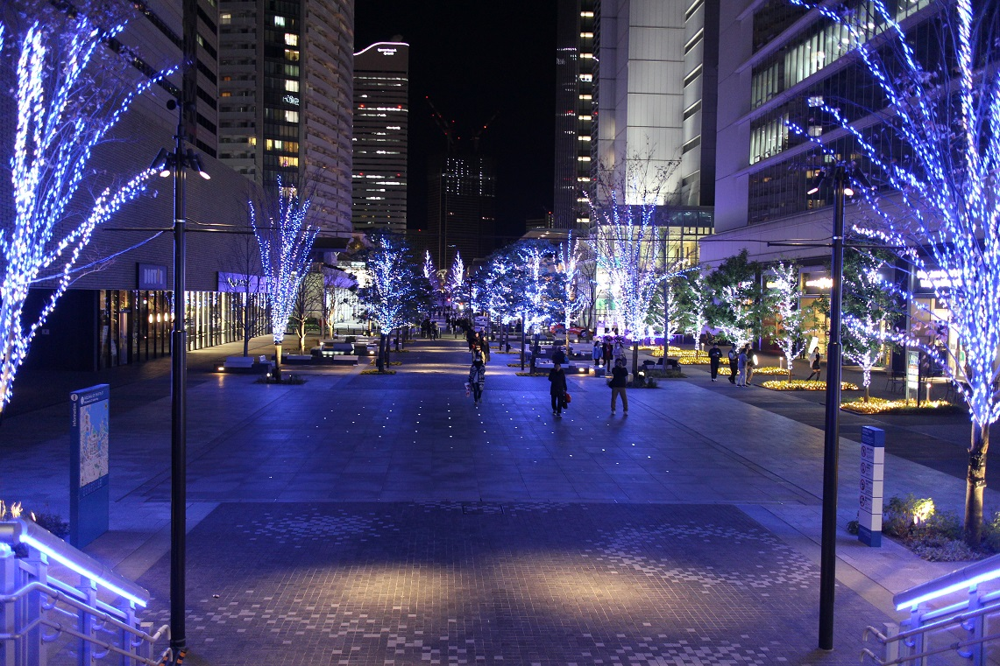
階段中央から。
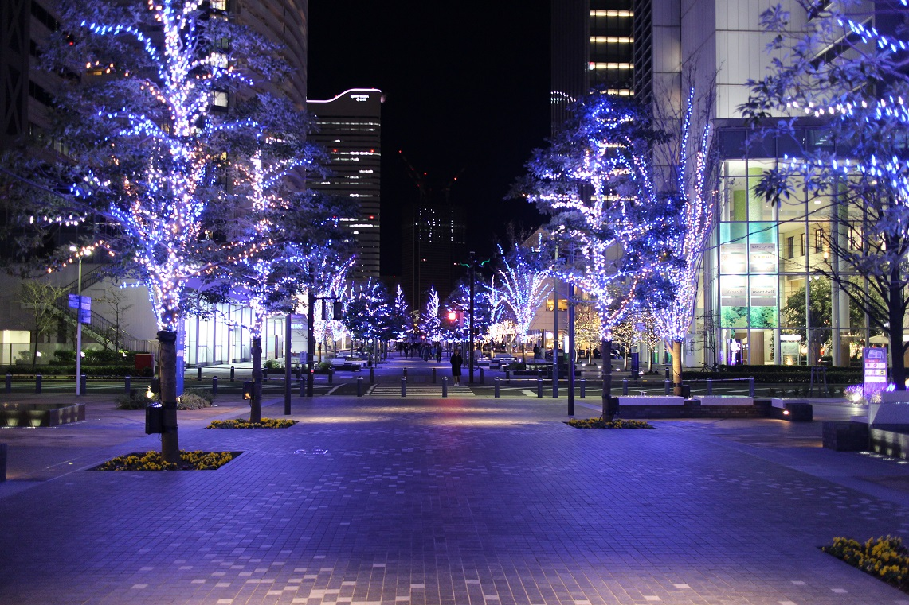
まだまだ続く。
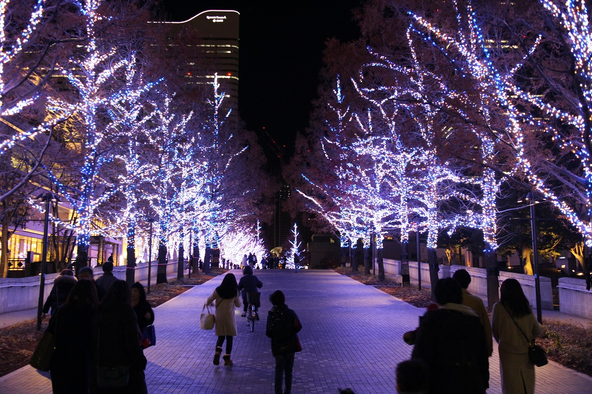
あっちめっちゃ輝いてるな。
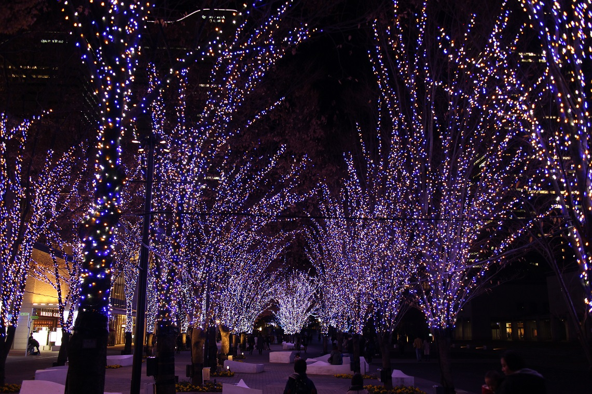
この辺輝いて人も結構いたけど、写真だと暗めになっちゃった。
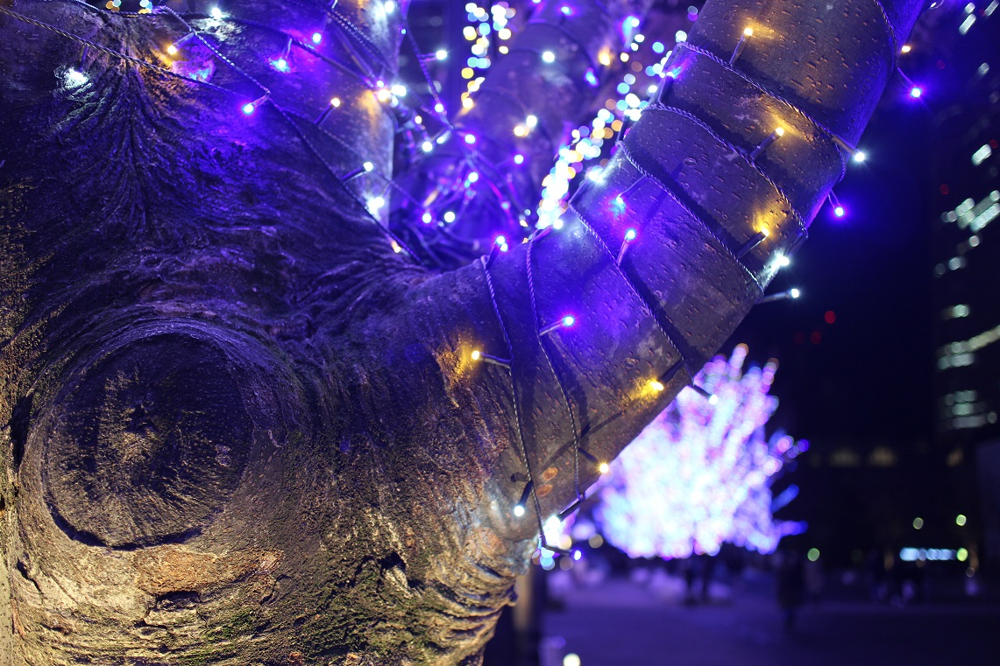
手前ピント。
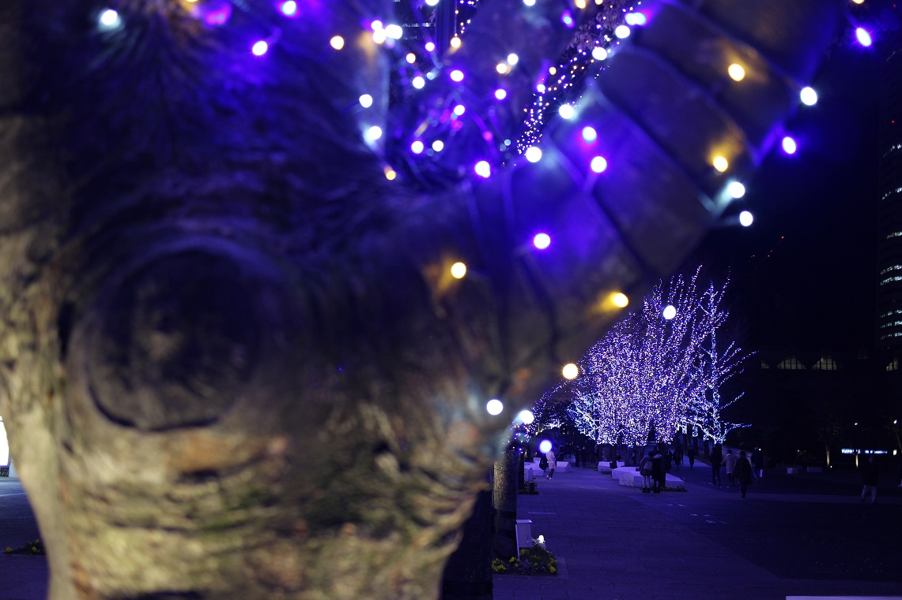
奥ピント。
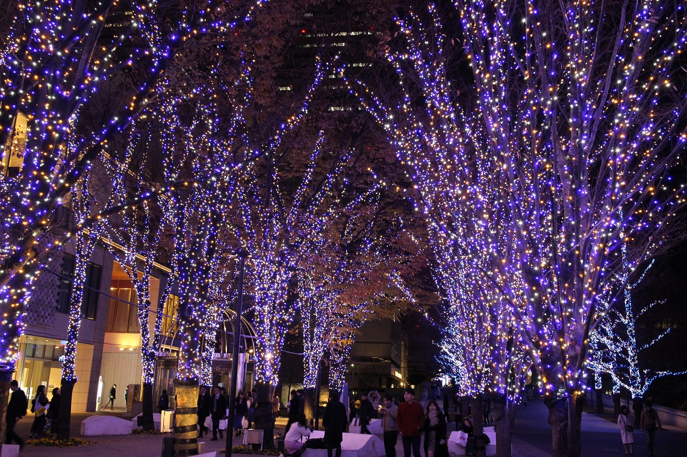
ここはもっと人いる。
みなとみらい駅に近づいてきたかな。
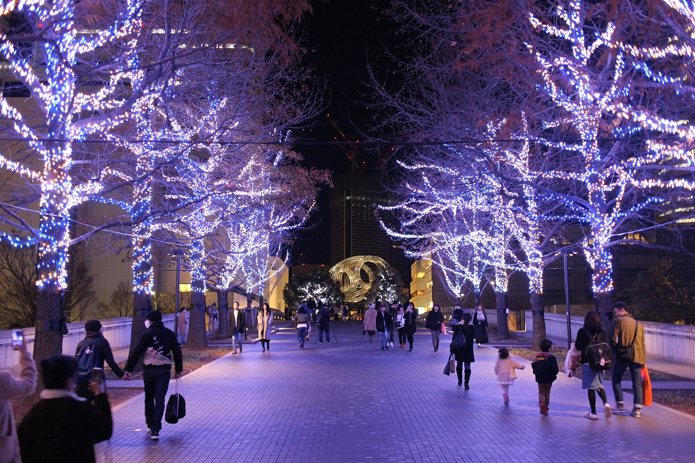
奥のオブジェにピント合わせたらちょっと明るくなったぞ！
あのオブジェのある場所から右の建物に入る。
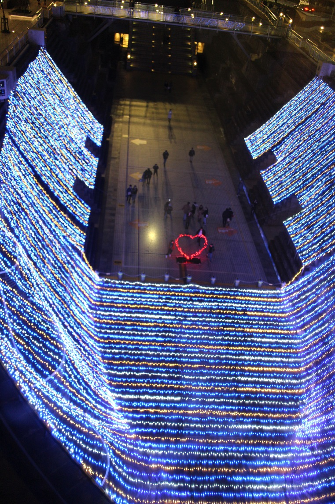
何かありますねぇ！
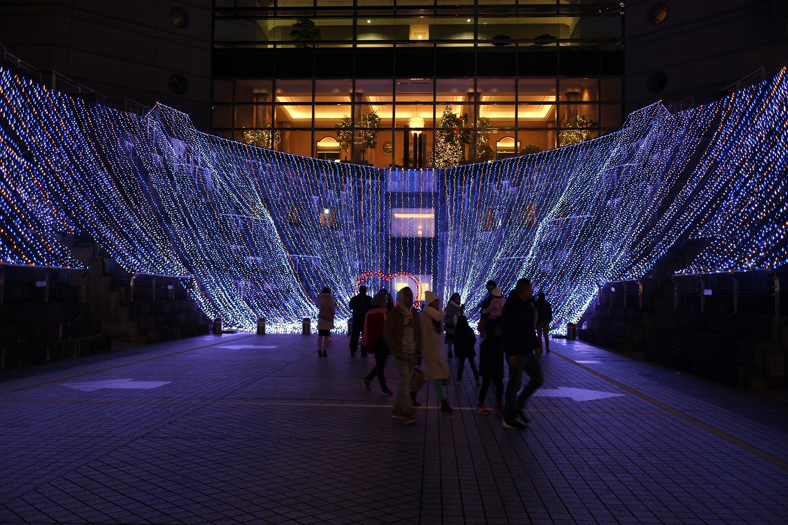
近くまで来たんですが、今いた後ろの建物、横浜ランドマークタワーでした。
東日本で一番高いビルとかどうとか。
69階に展望台もあるようです。
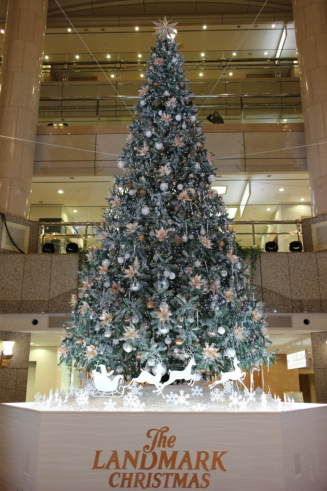
ツリーもあった。
最後につけ麺食べて終わり。
まぁ知ってはいたんですがカップルと家族連ればかりでした。
1人は悲しいので、どなたか...。